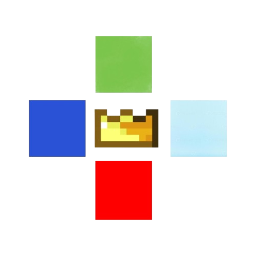

About Techno Launcher
Welcome to Techno Launcher, A launcher designed for less effort. Techno Launcher provides you a in-built version installer. You can install any version of vanilla and also two mods loaders: Fabric and Forge. Techno Launcher provides a mod manager where you can disable/enable, delete or add mod of modrinth from there. Techno Launcher also provides a pre-made worlds manager, just create a folder named "premade_worlds" and you can add them from premade worlds section; this is like a backup worlds section."
Whether you are looking for a clean and easy UI Laucher. Techno Launcher provides that.
Core Highlights
- In-Built Mod Manager: Just add mods by typing name (supported with modrinth only) and disable/enable or delete them from mod-manager.
- In-built Version Installer: Download any version by just typing the version. It supports Vanilla, Forge and Fabric.
- Performance: Techno Launcher provides a good performance. Techno Launcher provides about same FPS as SKLauncher.

Ready to get started? Head over to the Download page to get the latest version today!
Credits:Idea: Safal Subedi
Developer: Safal Subedi
Solo DeveloperTechnoblade Never Dies!